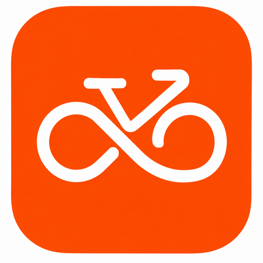

<!doctype html>
<html lang="en">
  <head>
    <meta charset="utf-8" />
    <meta name="viewport" content="width=device-width, initial-scale=1" />
    <title>Cycle Route Lab</title>
    <link rel="icon" type="image/png" href="rideloop_icon.png" />
    <link rel="apple-touch-icon" href="rideloop_icon.png" />
    <link
      rel="stylesheet"
      href="https://unpkg.com/leaflet@1.9.4/dist/leaflet.css"
    />
    <link rel="stylesheet" href="styles.css" />
  </head>
  <body>
    <div class="app-shell">
      <aside class="route-panel" aria-label="Cycling route controls">
        <header class="brand-row">
          <div class="brand-lockup">
            
            <div>
              <p class="eyebrow">Cycle Route Lab</p>
              <h1>Build a safer loop</h1>
            </div>
          </div>
          <span class="source-badge" id="sourceBadge">Preview</span>
        </header>

        <form class="route-form" id="routeForm">
          <section class="control-section">
            <label for="originInput">Start</label>
            <div class="input-row">
              <input
                id="originInput"
                name="origin"
                type="search"
                autocomplete="street-address"
                placeholder="Address or place"
              />
              <button type="button" id="searchButton">Find</button>
            </div>
            <div class="action-grid">
              <button type="button" id="locationButton">Use Location</button>
              <button type="button" id="saveHomeButton">Save Home</button>
              <button type="button" id="useHomeButton">Use Home</button>
            </div>
          </section>

          <section class="control-section">
            <label>Distance</label>
            <div class="segment-control" role="radiogroup" aria-label="Distance">
              <input id="distance5" name="distancePreset" type="radio" value="5" />
              <label for="distance5">5 mi</label>
              <input
                id="distance10"
                name="distancePreset"
                type="radio"
                value="10"
                checked
              />
              <label for="distance10">10 mi</label>
              <input id="distance20" name="distancePreset" type="radio" value="20" />
              <label for="distance20">20 mi</label>
            </div>
            <div class="input-row compact">
              <input
                id="customDistance"
                name="customDistance"
                type="number"
                min="2"
                max="80"
                step="1"
                value="10"
              />
              <span class="unit-label">custom miles</span>
            </div>
          </section>

          <section class="control-section split-section">
            <div>
              <label for="profileSelect">Ride Type</label>
              <input id="profileSelect" name="profile" type="hidden" value="cycling-road" />
              <div class="readonly-value">Road bike</div>
            </div>
            <div>
              <label for="fitnessSelect">Hills</label>
              <select id="fitnessSelect" name="fitness">
                <option value="0">Gentler</option>
                <option value="1" selected>Moderate</option>
                <option value="2">Sporty</option>
                <option value="3">Climber</option>
              </select>
            </div>
          </section>

          <section class="control-section">
            <div class="checkbox-row">
              <input id="avoidBacktracksInput" name="avoidBacktracks" type="checkbox" checked />
              <label for="avoidBacktracksInput">Avoid out-and-backs</label>
            </div>
            <div class="checkbox-row">
              <input id="familySafeInput" name="familySafe" type="checkbox" checked />
              <label for="familySafeInput">Family-safe roads</label>
            </div>
            <div class="checkbox-row">
              <input id="firstTurnRightInput" name="firstTurnRight" type="checkbox" checked />
              <label for="firstTurnRightInput">First turn right</label>
            </div>
            <div class="checkbox-row">
              <input id="favorStravaInput" name="favorStrava" type="checkbox" />
              <label for="favorStravaInput">Favor Strava segments</label>
            </div>
            <label for="avoidRoadsInput">Avoid Roads</label>
            <input
              id="avoidRoadsInput"
              name="avoidRoads"
              type="text"
              autocomplete="off"
              placeholder="NJ-34, Route 34"
            />
            <label>Road Closures</label>
            <div class="closure-grid">
              <button type="button" id="markClosureButton">Mark Closure</button>
              <button type="button" id="clearClosuresButton" disabled>
                Clear Closures
              </button>
            </div>
            <label>Manual Waypoints</label>
            <div class="closure-grid">
              <button type="button" id="addWaypointButton">Add Waypoint</button>
              <button type="button" id="clearWaypointsButton" disabled>
                Clear Waypoints
              </button>
            </div>
          </section>

          <section class="control-section">
            <label for="orsKeyInput">openrouteservice key</label>
            <div class="input-row">
              <input
                id="orsKeyInput"
                name="orsKey"
                type="password"
                autocomplete="off"
                placeholder="Optional for live routing"
              />
              <button type="button" id="saveKeyButton">Save</button>
            </div>
          </section>

          <section class="control-section">
            <label for="stravaTokenInput">Strava access token</label>
            <div class="input-row">
              <input
                id="stravaTokenInput"
                name="stravaToken"
                type="password"
                autocomplete="off"
                placeholder="Optional segment scoring"
              />
              <button type="button" id="saveStravaKeyButton">Save</button>
            </div>
          </section>

          <button class="primary-action" id="buildButton" type="submit">
            Build Route
          </button>
        </form>

        <section class="route-readout" aria-live="polite">
          <div class="metric">
            <span>Distance</span>
            <strong id="distanceOut">--</strong>
          </div>
          <div class="metric">
            <span>Est. Time</span>
            <strong id="timeOut">--</strong>
          </div>
          <div class="metric">
            <span>Drive</span>
            <strong id="driveOut">--</strong>
          </div>
          <div class="metric">
            <span>Points</span>
            <strong id="pointsOut">--</strong>
          </div>
        </section>

        <div class="export-row">
          <button type="button" id="downloadButton" disabled>Garmin GPX</button>
          <button type="button" id="downloadEnhancedButton" disabled>
            Enhanced GPX
          </button>
          <button type="button" id="downloadTcxButton" disabled>TCX</button>
          <button type="button" id="shareButton" disabled>Share GPX</button>
          <button type="button" id="undoEditButton" disabled>Undo Edit</button>
        </div>

        <p class="status-line" id="statusText">Ready.</p>
      </aside>

      <main class="map-shell" aria-label="Route map">
        <div id="map"></div>
      </main>
    </div>

    <script src="https://unpkg.com/leaflet@1.9.4/dist/leaflet.js"></script>
    <script src="app.js?v=20260615-strava-segments"></script>
  </body>
</html>
